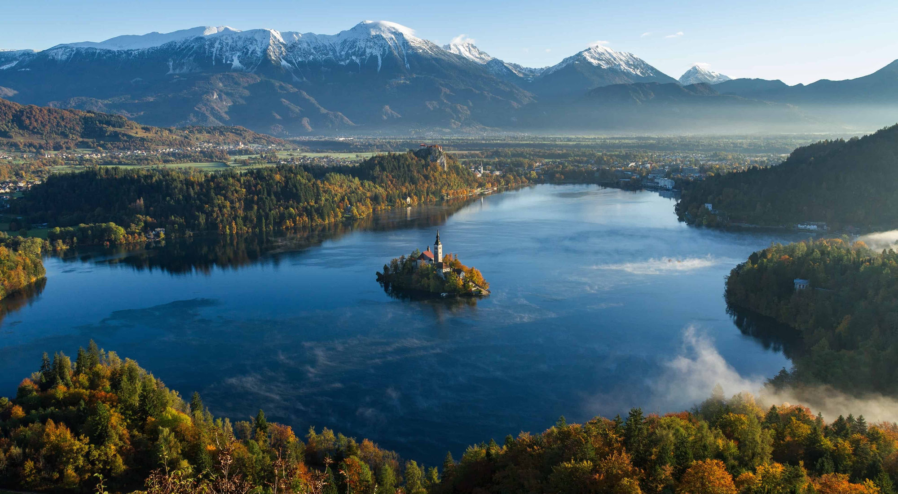
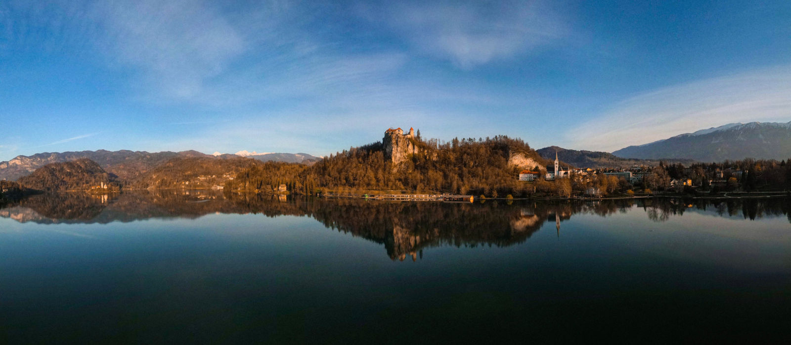
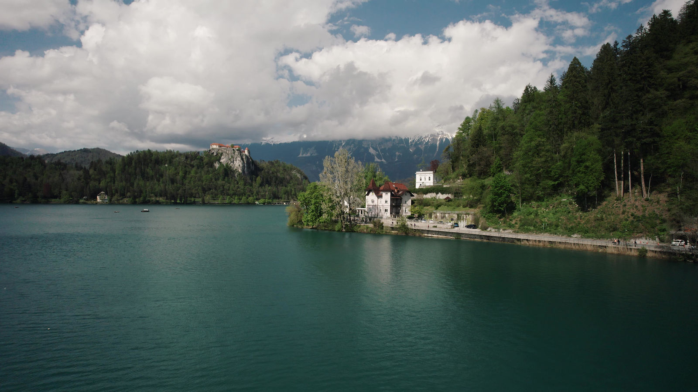
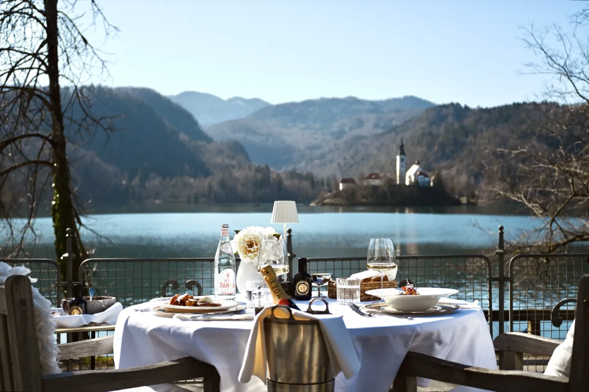

The large terrace
Relax outside with open views across Lake Bled and the surrounding landscape.
.jpeg)
Villa Adora · Bled
A generous breakfast buffet directly beside Lake Bled, with beautiful views of the lake and Bled Island. Open every morning to hotel guests and outside visitors.
Good mornings, simply done
Choose what you like, come back for more, and take your time. Our all-in-one breakfast buffet brings together fresh ingredients, warm favourites and the quiet feeling of a morning directly beside Lake Bled, with views of the lake and island.
Villa Adora
Come for the table, stay for the setting: a historic villa beside Lake Bled with the island, castle and mountains in view.




From the breakfast table
Take a look at the buffet, the setting and the views waiting for you at Villa Adora.

.jpeg)

.jpeg)
.jpeg)
.jpeg)
.jpeg)
.jpeg)

Breakfast with view
We prepare every table with care. Sit inside or outside, depending on your wishes and the weather.
Relax outside with open views across Lake Bled and the surrounding landscape.
Reserve a table in front of the pavilion for a beautiful view of Bled Island.
A sheltered, intimate setting for breakfast in any weather.
Enjoy breakfast above the pavilion with a different perspective on the lake.
Save your table
Enjoy the full breakfast buffet for €35 per person. Tell us where you would like to sit and we will do our best to prepare your preferred setting.
Questions, answered
Yes. Breakfast at Villa Adora is open to hotel guests and outside visitors.
Breakfast is served every day from 7:30 to 10:30.
We are directly beside Lake Bled at Cesta svobode 35, with views of the lake and Bled Island. The centre of Bled is approximately a 10-minute walk away.
Yes. You can request the large terrace, a table with a view of the island in front of the pavilion, the pavilion, the sundeck above the pavilion, or an indoor table depending on your wishes and the weather.
Parking is available on request in front of the house. Sokol parking may also be available, subject to availability.
Reservations are recommended for weekends and holidays. Use the reservation form above and we will confirm by email.
Find us
Villa Adora is directly beside Lake Bled, with views of the lake and Bled Island. The centre of Bled is approximately a 10-minute walk away. Parking is available on request in front of the house; Sokol parking may also be available.